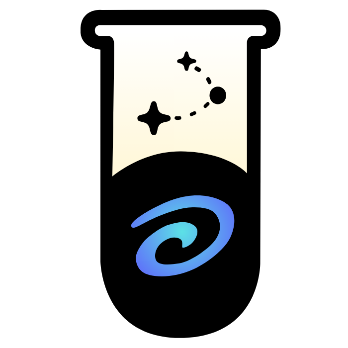

Exploring AI safety & Physical AI
- Currently working on research in AI safety evaluation, VLA/RL & robotics manipulation, model optimisation/distillation and related areas while exploring opportunities to build or join a startup.
Grokking & Hillclimbing · Based in Malaysia
I'm competitive by nature, agentic by habit.
Coming from a non-linear and under-resourced background, I started my journey at age 10 by teaching myself to hack a game website and jailbreak phones and eventually found my way to frontier AI research. And that itself has trained me to be highly adaptable at solving and learning from unfamiliar and hard problems, and most of the time, I'm obsessed with problems I truly care about.
I'm currently working on open-source AI research at EleutherAI, while also building on AI safety evals for LLMs and physical AI, mechanistic interpretability, and model inference optimisation/distillation. My research interest lies in understanding how the models work internally at the layer level, and how that understanding can push AI forward while keeping it safe and fast enough to deploy in real-world settings.
Places I've worked in: Shanghai Jiao Tong Uni., Uni. of Maryland, Metacreation Lab, SEACrowd.
There are two things I care most about solving:
I almost got kicked out of secondary school because of the unfairness I faced at the Malaysia ISEF selection fair.
My first realisation of this inequality was during that fair. Despite having the privilege of going to a top Chinese public school that allowed me to get into science research early on (which I'm still grateful for), I realised how unfair these opportunities are, hidden behind their own quiet privileges.
As a matter of fact, only a few schools in Malaysia even have science research opportunities like this. It's sad that despite the country spending RM60 billion on education, we're still lacking when it comes to letting students break out of their boundaries.
The most ironic part is that after I spent so much time on my first research project, I didn't make it to ISEF. I was really disappointed, especially after nearly a year of constant effort and skipping an entire year of school to do my research.
What disappointed me more was asking the judges for feedback and being told it was undisclosed. I was really mad about it, so I emailed ISEF officials because I truly believed the selection process lacked transparency. It ended up with my school telling me to write an apology letter to the Ministry of Education, when all I wanted was to know how they selected the finalists. I just felt it was unfair.
That was the moment I realised the system doesn't just reward raw talent or hard work. It disproportionately rewards those who already have a head start or connections, even though the system is supposed to give everyone an equal opportunity regardless of their background.
I hated seeing how systemic bias could limit students' opportunities, so I decided to take things into my own hands and founded MYResearchGuide to help young people across Malaysia access science research opportunities regardless of their background or socioeconomic status.
Though this is just my first step toward democratising opportunity, I'm not waiting for the system to fix itself.
I want to build the architecture that lets anyone, regardless of their background, get the shot they deserve.
I've spent enough time in AI research to see both sides of it up close.
One side is exciting. The 2024 Nobel Prize in Chemistry went to work on protein structure prediction, a problem biologists had been stuck on for decades until AI cracked it open. Moments like that convinced me AI isn't just a tool for automating tasks. It can genuinely extend what humans can solve.
The other side worries me. The companies building the most powerful AI systems aren't doing it purely out of curiosity or a desire to help people. There's an enormous amount of money and geopolitical leverage on the line, with the US and China alone pouring hundreds of billions into AI infrastructure and racing for dominance, and that changes the incentives. UN AI safety experts have warned that AI capability is already outpacing both scientific understanding and government policy, leaving governance fragmented and many countries reliant on systems they can't fully assess or control. What scares me is not just people losing jobs, but decisions increasingly resting on systems neither the public nor the people governing us fully understand.
I don't think either outcome is guaranteed. This could end with AI making life better for most people, or with a small number of people holding all the power while everyone else gets left behind. Which one happens depends a lot on who's actually in the room shaping this, not just engineers, but policymakers, researchers, journalists, and people willing to hold this industry accountable.
That future is still ours to shape. If we take AI's risks seriously early, we have a chance to share its benefits widely and address the dangers before they become impossible to ignore.
That work has to start now, not later.
Selected work